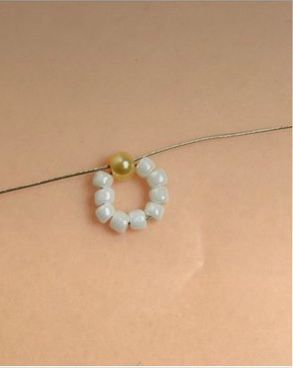
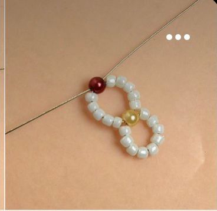
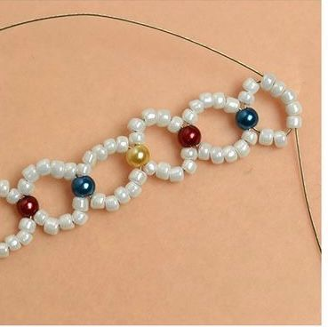

Другие украшение из бисера |
Как сделать браслет из бисераШаг 1 Наденьте на леску 9 бусин любого цвета и 1 другого цвета. И затем в последнию проденьте леску крест на крест. Шаг 2 Далее на левый конец лески проденьте 5 белых бусин, а на правый 4 белых и 1 любого другого цвета. В бусину другого цвета проденьте леску крест на крест. Шаг 3 Таким же способом продолжаем плести брослет до нужного вам размера. |